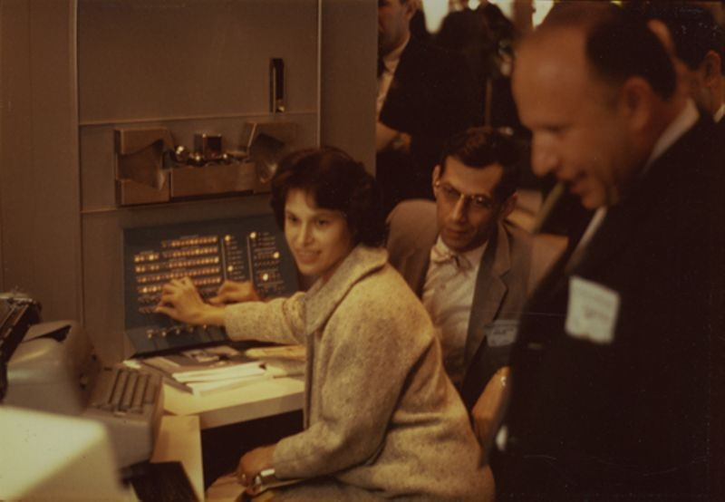
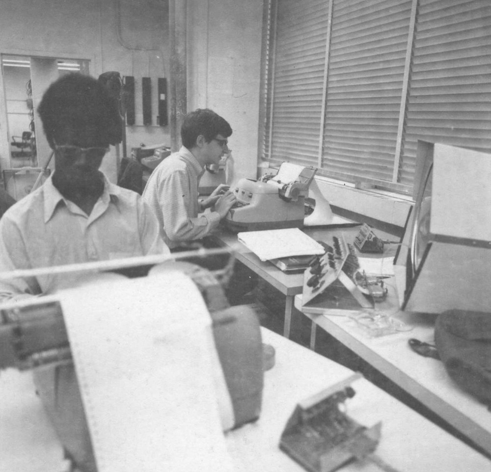

spacewar.mac · ~2057 lines
The source
Russell's MIDAS macro-assembly for the 1962 game: the macro definitions, the ship-outline compiler, gravity, hyperspace. The primary close-reading text.
PDP-1 · MIDAS macro assembly · MIT, 1961–62
Reading the code at the origin of computational play
A critical code study of the space-combat program written for the DEC PDP-1 at MIT in 1962, read as a cultural text.

Spacewar! is where code first becomes play. Written across 1961–62 by Steve Russell and a circle of MIT hackers for the DEC PDP-1, in roughly two thousand words of MIDAS macro-assembly it gave the computer a starfield, two ships, gravity, and a panic button. It is one of the founding objects of computational culture: real-time interactive graphics, the hacker ethos, the demo, the free circulation of source, all condense here, on a machine whose lineage runs back through Lincoln Laboratory and the Cold-War air-defence project SAGE.
This project reads that program as a cultural text. Following Critical Code Studies, the source is approached in its multiplicity, as literature, as mechanism, as spatial form, and as a repository of the social formation that produced it. Reading about the origins of computing is not the same as reading the origin's code. The aim is to do the latter: to sit with the listing, the macros, the octal addresses, and the running artefact, and to ask what this code knows, what it assumes, and what its founding myth leaves out.
Critical Code Studies (CCS) applies the interpretive methods of the humanities to computer source code, reading code, architecture, and documentation within their sociohistorical context. Its premise is that lines of code are not value-neutral: meaning grows out of what the code does but is never exhausted by it. Code can be close-read like any other text, attended to for its naming, its comments, its silences, and the assumptions it encodes, while still being held to its material test, that it must compile and run.
This reading works in the tradition developed by Mark C. Marino and David M. Berry, reading code at once as literature, mechanism, spatial form, and social repository.
This study is a companion to Inventing ELIZA: How the First Chatbot Shaped the Future of AI (Sarah Ciston, David M. Berry, Anthony C. Hay, Mark C. Marino, Peter Millican, Arthur I. Schwarz, Jeff Shrager and Peggy Weil, MIT Press, 2026), the team's critical code reading of Joseph Weizenbaum's 1966 conversation program. Two foundational programs of the long 1960s, read side by side: ELIZA teaches the machine to talk, Spacewar! teaches it to play. One opens the question of artificial conversation and the projection of mind onto code; the other opens the question of real-time interaction, simulation, and computational play. Together they let us read the origins of computational culture not through its myths but through its source.
Spacewar! was conceived in 1961 by Martin Graetz, Wayne Wiitanen, and Steve Russell, members of the circle around MIT's Tech Model Railroad Club, when the Hingham Institute set itself the problem of writing a program that would show off the new PDP-1. Russell wrote the core over the winter of 1961–62. Two ships, a needle and a wedge, fired torpedoes at one another across a starfield. From there it grew by accretion: Peter Samson replaced the random background with the Expensive Planetarium, the actual night sky; Dan Edwards added a central star whose gravity pulled both ships toward it; Graetz added hyperspace, a panic button that made a ship vanish and reappear elsewhere at random, at the risk of never coming back. By spring 1962 Alan Kotok and Bob Saunders had built dedicated control boxes so players need not hunch over the console switches.
Almost as soon as it existed it circulated. The source was copied from PDP-1 to PDP-1, modified, extended, and passed on, an open artefact decades before "open source" had a name. What we intend to do is read that artefact closely: to take the surviving MIDAS source and its assembler listing and work through them line by line, pairing technical explication with cultural interpretation, and asking what this small, much-copied program can tell us about the moment computation became interactive, playable, and shared.
There is no single Spacewar! source code. What survives is a family of versions: the early MIT releases (1, 2B, 3.1), the forked 4.x generation of 1963, later reconstructions such as the Computer History Museum's 4.1f, and the many ports and clones of its long journey, each in its own dialect of assembly. The primary texts here are the MIDAS macro-assembly sources, preserved alongside assembler listings, provenance notes, and a runnable PDP-1 emulator, so the reading can move between text, version, and execution. The Versions page and the Timeline lay out the whole variorum.
spacewar.mac · ~2057 lines
Russell's MIDAS macro-assembly for the 1962 game: the macro definitions, the ship-outline compiler, gravity, hyperspace. The primary close-reading text.
spacewar.lst · 233 KB
The assembler listing: octal addresses and machine words beside each line. The material memory layout, the program as it sits in core.
originsources.zip
A dated upstream snapshot tracing the source back through the Silverman / Gerasimov PDP-1 emulator to the recovered 3.1 listing.
spacewar.js · emulator
A PDP-1 emulator in the browser. The 1962 code, executing. Play it →
/ spacewar 2b · 2 apr 1962 · pdp-1 midas macro-assembly / one of many surviving versions (reconstructed by Norbert Landsteiner) define index A,B,C idx A sas B jmp C term define swap rcl 9s rcl 9s term define count A,B isp A jmp B term
The DEC PDP-1 was, for its day, an intimate machine. Where contemporary mainframes cost millions and were tended by operators behind glass, the PDP-1 sold for around $120,000, sat in a single room, and let one person work at it directly, watching results appear in real time on a round, radar-derived screen. That immediacy is the condition of possibility for Spacewar!
The display was the DEC Type 30, a sixteen-inch CRT addressing a grid of 1024 × 1024 points, coated in long-persistence P7 phosphor that flashed blue-white and faded to amber-green. Programs were loaded from punched paper tape through a Flexowriter. The custom control boxes, with two levers and a fire button, were among the first dedicated game controllers ever built.

Context
Spacewar! came out of MIT's Tech Model Railroad Club and its hacker ethic, with a debt to E. E. "Doc" Smith's pulp space opera. The PDP-1's own lineage runs back through the TX-0 to Lincoln Lab and the Cold-War SAGE air-defence project.
Hardware
Toggling console switches gave players sore elbows, so in March 1962 Alan Kotok and Bob Saunders built wooden control boxes with levers for rotation and thrust and a button to fire, among the earliest purpose-built game controllers, though William Higinbotham's Tennis for Two (1958) had already used dedicated knob-and-button controllers four years earlier.
Software artefact
Peter Samson's Expensive Planetarium plotted the actual stars of the night sky as the background; Dan Edwards added a central sun whose gravity well drew careless pilots to their doom. Hyperspace let you escape, sometimes fatally.
Approach
We read the MIDAS source closely across the registers of CCS, and treat programming as scholarship: running the emulator, making small modifications and ports, and comparing transcriptions, so interpretation is tested against the artefact itself.
The study works across the registers of Critical Code Studies, pairing close technical explication of a code fragment with the cultural constellation that spirals out from it. Each fragment is read at three levels and traced through three movements.
The unmodified Spacewar! source, executing on a PDP-1 emulator in your browser. Two ships, one star, gravity that will pull you in.
▶ Enter the playfieldThe reading sits within the Critical Code Studies programme and a wider literature on the history and culture of early computing.
With grateful acknowledgement to Norbert Landsteiner, whose remarkable emulations, reconstructions, source listings, and software-archaeological analyses of Spacewar! and the Minskytron at masswerk.at this project draws on.
The Spacewar! reading is a collaboration bringing together critical code studies scholars and others.